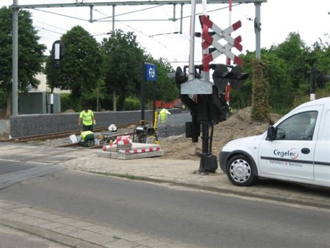

Zomerdienstregeling metro komt dichterbij en meer nieuws...
- dinsdag 02 december 2008 21:27
- Geschreven door Joachim
Hoewel vandaag de zomerdienstregeling voor tram en bus begint, gaat op 10 juli a.s. de zomerdienstregeling voor de metro in. Afhankelijk van het traject betekent dit een meer of minder frequente uitvoering van de dienstregeling. Geheel nieuw in de dienstregeling is het ontruimen van de laatste metrotreinen op station Alexander, om vervolgens buiten dienst koers te zetten richting emplacement 's-Gravenweg. Hiertoe worden de richtingfilms en de afroepinstallaties van alle metrorijtuigen op de Calandlijn aangepast.
Revitalisatie sneltramstations
De revitalisatie van de sneltramstations in de wijken Ommoord en Zevenkamp vordert gestaag. Inmiddels wordt op zowel station Graskruid als Hesseplaats gewerkt aan de aanleg van een nieuwe dakbedekking, zoals nu reeds het geval is op de stations Oosterflank, Prinsenlaan en Schenkel. Naast de aanleg van nieuwe dakbedekking wordt er op sommige sneltramstations geverfd, getegeld of wordt een begin gemaakt met het plaatsen van nieuwe kozijnen in de wachtruimten.
Op het dak van station Hesseplaats (spoor 2) is men bezig met het aanbrengen van nieuwe dakbedekking.
Aan de andere kant van het station is men al verder gevorderd met het aanbengen van het nieuwe materiaal.
Renovatie liften
Op diverse metrostations worden de liften gerenoveerd. Er worden geheel nieuwe liftkooien gerealiseerd met glazen liftduren, dit om o.a. het veiligheidsgevoel te verhogen. De RET probeert zoveel mogelijk te voorkomen dat een roltrap en een lift tegelijkertijd niet werken.
Nachtmetro
In verband met het North Sea Jazzfestival op 14, 15 en 16 juli in Ahoy, worden er in verband met het afvoeren van extra reizigersstromen "nachtmetro's" ingezet tussen de stations Slinge en Centraal Station. Op dit traject stopt de metro achtereenvolgens op de stations Zuidplein, Leuvehaven en Stadhuis. De nachtmetro rijdt van 01.00 uur tot 03.30 uur, ieder kwartier. Er moet betaald worden met een nachtnetvervoersbewijs, waarmee 90 minuten gereisd kan worden of men kan gebruik maken van het speciale North Sea Vervoersbewijs.
RandstadRail-rijtuigen
De voor RandstadRail omgebouwde metrorijtuigen 5261 en 5270 zijn inmiddels ook voorzien van een RandstadRail-kleurstelling. De rijtuigen verblijven op spoor 121 van emplacement Waalhaven. Wanneer een nieuw transport plaatsvindt richting de NedTrain-werkplaats in Leidschendam is nog niet bekend. De 5268 en de 5269 zijn hier reeds aanwezig.
Werkzaamheden RandstadRail-tracé
Op het RandstadRail-tracé tussen de stations Rotterdam Hofplein en Den Haag Centraal vinden diverse werkzaamheden plaats. Het gaat hier om het leggen van bekabeling ten behoeve van het seinsysteem en andere communicatiesystemen, maar ook het spoor en de ondergrond hiervan wordt op een aantal plaatsen vernieuwd. Daarnaast is er begonnen met het demonteren van NS-infrastructuur. Vanaf 3 september moet RandstadRail Rotterdam gaan rijden.
Foto's met dank aan  Jeepie.nl
Jeepie.nl
Bij het nieuwe station Leidschenveen wordt nieuw spoor aangelegd.
Oud spoor wordt verwijderd, nieuw spoor komt ervoor in de plaats.
Kijkend richting station Hofplein. Ook hier wordt gewerkt aan het spoor.

Alleen de NS-bewegwijzeing doet nog denken aan NS-station Kleiweg, inmiddels tot de grond toe gesloopt. In plaats van dit station wordt iets verderop station Melanchthonweg gerealiseerd.
Pandora aangekomen in toekomstig station Blijdorp
Tunnelboormachine Pandora is aangekomen op de toekomstige locatie van station Blijdorp. Inmiddels heeft de tunnelboor 1400 meter afgelegd. Nu dient het resterende deel van ongeveer een kilometer nog geboord te worden. Pandora komt daarna aan in de ontvangstschacht aan de Conradstraat, in de buurt van het Stationsplein. Wanneer dit het geval is, zal de tunnelboormachine met een gewicht van 650.000 kilo in delen uit de schacht getild worden en getransporteerd worden naar de Sint Francisicus-driehoek, alwaar dan begonnen wordt met het boren van een tweede tunnelbuis.
5245
Rijtuig 5245 heeft een revisie ondergaan op lijnwerkplaats Waalhaven. Het eerstvolgende metrosneltramrijtuig dat een revisie zal ondergaan is metrorijtuig 5239, welke inmiddels verblijft op de sporen van emplacement Waalhaven.
AHOB-storingen
De afgelopen weken vonden er diverse storingen plaats aan de AHOB-systemen van onder meer de kruisingen Hoofdweg, Oosterflank en Burgaslaan. Het metroverkeer ondervond hiervan nauwelijks hinder, het wegverkeer op sommige momenten wel omdat slagbomen weigerden open te gaan. De storingen worden zo snel mogelijk opgelost door de technische dienst, om overlast tot een minimum te beperken.
Tourniquets & Chipkaart (TCK)
Wederom werd een nieuwe versie van het softwaresysteem voor de Verkoop & Oplaadautomaten gelanceerd. In de nieuwe versie zijn onder meer enkele schermteksten aangepast. Ook de gevoeligheid van de touchscreens is verbeterd.
Vanaf deze week is het ook mogelijk de RET OV-Chipkaart te gebruiken bij de Nederlandse Spoorwegen op de "Hoekse Lijn". Hiervoor dient een speciale gratis patch op de kaart geladen te worden bij een Verkoopautomaat van de Nederlandse Spoorwegen. Met deze patch is het mogelijk NS-reisproducten op de kaart te laden en op de Hoekse Lijn met een OV-Chipkaart in- en uit te checken.
Aanvullende veiligheidstrainingen
Na de zomer van 2006 zal begonnen worden met het geven van veiligheidstrainingen aan het personeel van de RET. Volgens de RET zijn de trainingen bedoeld als toevoeging op het brede pakket veiligheidsmaatregelen die de RET inzet voor bus, tram en metro.
De RET tekende een contract met I-SEC, een Israëlische organisatie die gespecialiseerd is in het beveiligen van openbare voorzieningen.
5300-rijtuigen Calandlijn
Op dit moment doen de 5347-5324-5328 dienst op de Calandlijn, elke doordeweekse dag op het traject De Terp (Capelle a/d IJssel) - De Akkers (Spijkenisse). Eerder werden de 5310 en de 5304 ingezet in plaats van metrorijtuig 5328.
Metrorijtuig 5304 als wagendienst 570 op station Troelstralaan spoor 1.
Metrorijtuig 5024 ziet even daglicht
De werkgroep Metro van Stichting RoMeO zorgde er op de Donateursdag van 17 juni j.l. voor dat metrorijtuig 5024 weer even het daglicht kon zien. Op het buitenterrein van Centrale Werkplaats Kleiweg werd een gehele zaterdag gewerkt aan het ontnemen van het groene zeil ter bescherming en het voor een deel schoonmaken van het eerste en tweede balkon, evenals de cabine. In afwachting van een onderkomen staat metrorijtuig 5024 nog steeds op het buitenterrein van Centrale Werkplaats Kleiweg.
Metrorijtuig 5024, deels ontdaan van het groene zeil op de Centrale Werkplaats Kleiweg.